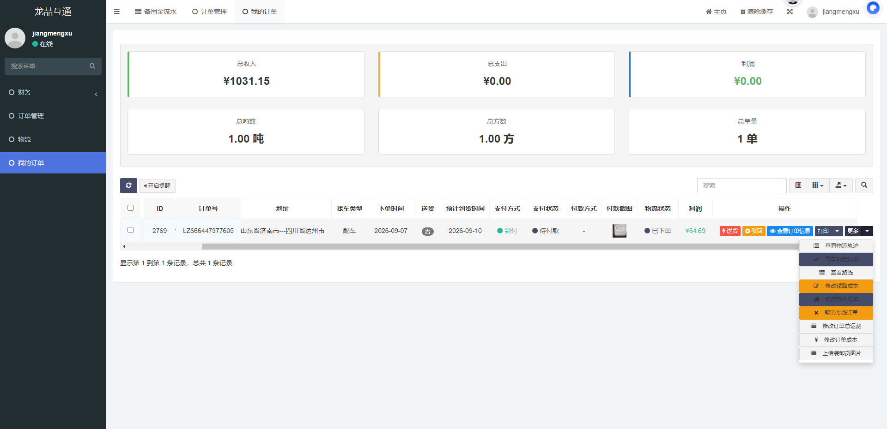
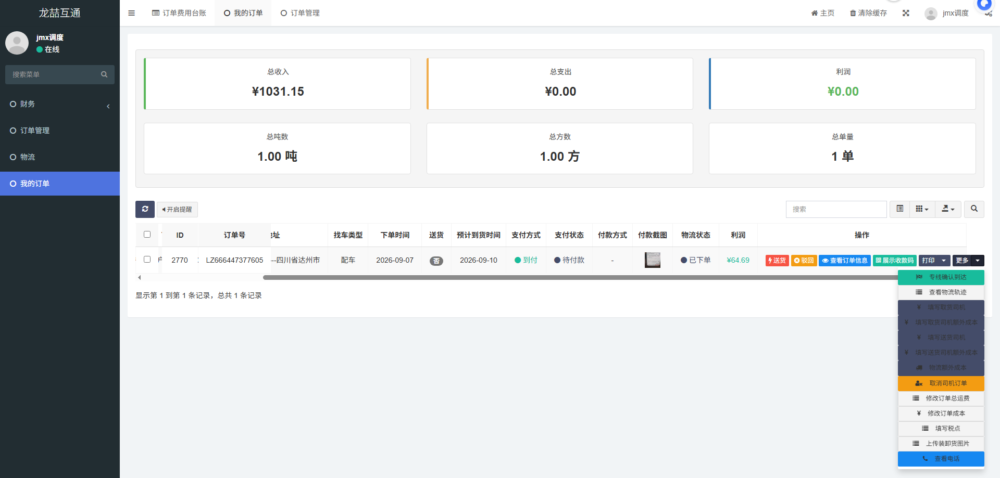

本页讲透「我的订单」背后，线路（销售）和调度各自拿到一单后，一步一步该做什么、每个按钮干什么、碰到异常怎么办。这是给这两个角色新员工的主教材。
关键分界线：线路负责“把单接下来并确认清楚”；调度负责“把车和司机派出去、跟到货、处理好收款和到达”。线路确认后订单才进入调度的列表。
| 线路（销售） | 调度 | |
|---|---|---|
| 能看到什么 | 自己这家加盟商范围的单（配车/专车/小票快运都有）。 | 只看到「找车类型=配车」且「线路已确认」的单。 |
| 核心动作 | 核对 + 确认订单（配车确定订单 / 填金额） + 打印 + 看轨迹。 | 指派车辆司机 + 填成本 + 跟踪 + 展示收款码/确认收款 + 专线到达 + 信息费打款。 |
| 不能做什么 | 不能配车派司机，不能看下级/别家的单。 | 不能看线路还没确认的单，不能看专车/小票快运单，不能看下级/别家。 |

点「查看订单信息」逐项核对，错一项后面全乱：
| 地址 | 装货地 → 卸货地，联系人和电话是否完整。地址错要客户改，或你联系确认。 |
| 货物 | 品名、重量、体积、车型要求、包装。不对会派错车。 |
| 找车类型 | 配车 / 专车 / 小票快运——决定你点哪个确认按钮。 |
| 金额 | 总运费 / 信息费+不可退回定金。价格没谈好先别确认。 |
| 时效 | 最早/最晚装货、预计到货时间。 |
| 支付方式 | 寄付 / 到付 / 月结。月结特别注意后面要扣钱。 |
| 打印 | 「托运单模板」「签收单模板」：给司机/客户纸质单证。 |
| 查看物流轨迹 | 「更多 → 查看物流轨迹」：看装货、运输、到达各环节。 |
| 修改订单总运费 | 「更多」里，金额谈变了改这个。 |
| 修改订单成本 / 线路成本 | 「更多」里，填这单的干线/路线成本，用于算利润。 |
| 上传装货现场照片 | 「更多」里，装货后拍照留存，方便对账和追责。 |
| 查看下单情况 | 看这个客户下过哪些单。 |
| 驳回 | 客户信息不对（地址/数量/重量/车型/金额）→ 点「驳回」，选只允许客户修改哪一项 + 填原因。客户改完重新提交。 |
| 取消 | 客户不要了 → 看是否已派车。已派车要先把司机订单取消，避免损失。 |
| 退款 | 已收款要退 → 用「退款」，确认金额和方式。 |

| 修改订单成本 | 「更多」里，填干线费/司机费等，用于算利润和扣费用。 |
| 填写杂费 | 「更多」里，回单费/拆包费/定金等额外费用。 |
| 上传相关图片 | 「更多」里，装货/运输/签收照片，便于追责和结算。 |
| 查看物流轨迹 | 「更多」里，实时看装货、运输、到达。 |
| 改派司机 | 司机临时换/联系不上 → 先「取消该司机订单」，再重新指派（以实际按钮为准）。 |
| 专线确认到达 | 专线运单到了 → 点「专线确认到达」，系统问“是否已扣专线费”，按实际回答（影响从调度备用金扣钱）。 |
| 信息费确认打款 | 有信息费/额外费用要付给司机/信息部 → 点「信息费确认打款」，看好金额再打，备注清楚。 |
| 展示收款码 | 要收客户钱 → 点「展示收款码」，选收款方式（二维码/其它），把收款方式展示给客户。 |
| 确认已收款 | 客户已付款 → 在收款方式弹窗点「确定」；未收到钱千万别确认。 |
| 标记为送货 | 这单需要送货 → 点「送货」。月结送货完成会从调度备用金扣全部订单运费。 |
| 我看到别人看不到的单？ | 别慌，是你这家加盟商范围（绑定会员/区域）内的单。不是这家的就不该出现。 |
| 我看到“配车确定订单”但点不了？ | 可能不是配车单、或已确认过、或你不是线路角色。核对找车类型。 |
| 调度看不到这单？ | 订单可能还没被线路确认（还是配车但未确认），或不是配车类型，或不是你这家加盟商的。 |
| 订单被驳回了？ | 信息要改。看原因 → 让客户改对应项 → 重新提交。驳回后大部分按钮锁定。 |
| 扣了我备用金？ | 多为月结送货完成扣费，或信息费打款。看流水备注确认。 |
| 账号看不到某些菜单？ | 角色组权限没勾。找管理员在「角色组」勾选（只给必要的业务菜单）。 |